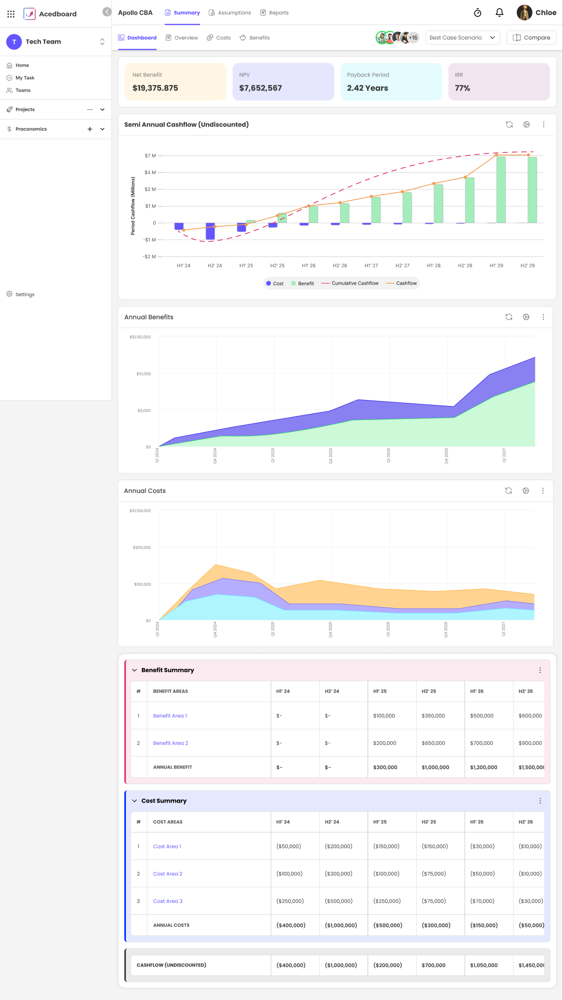
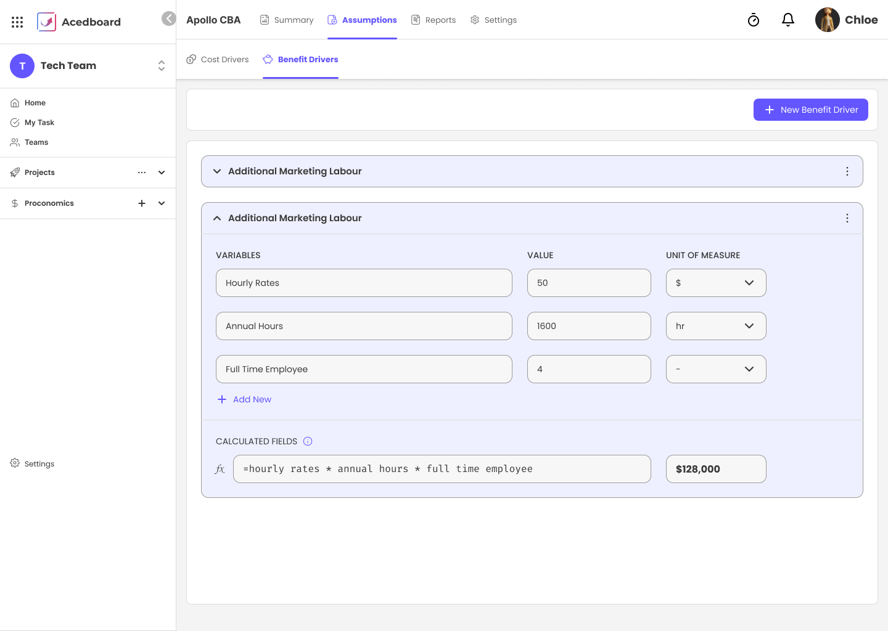
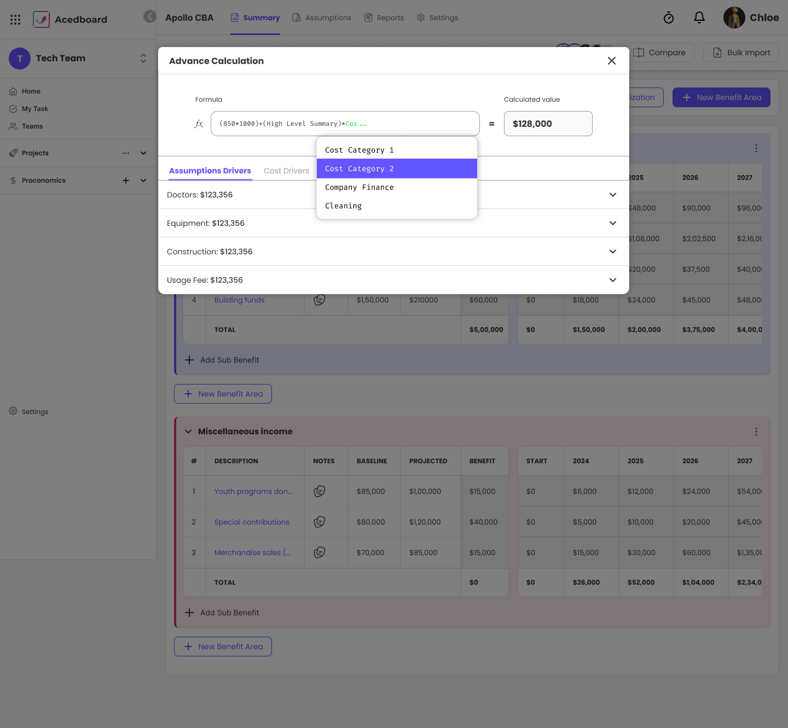
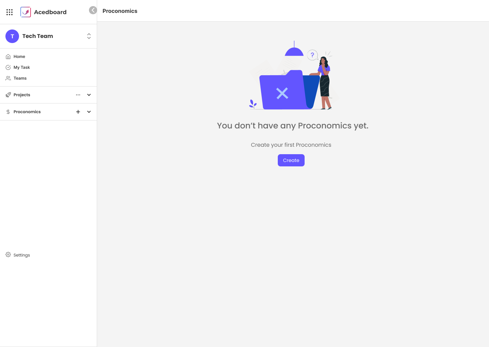
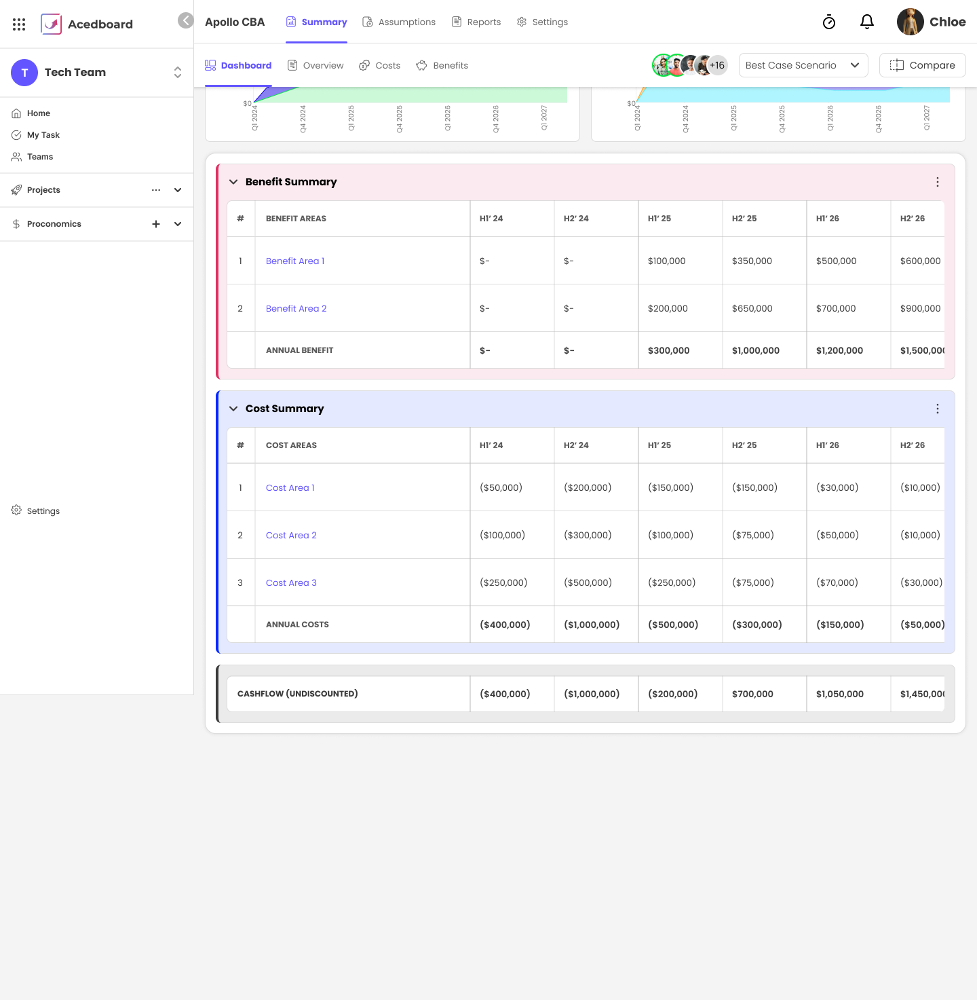
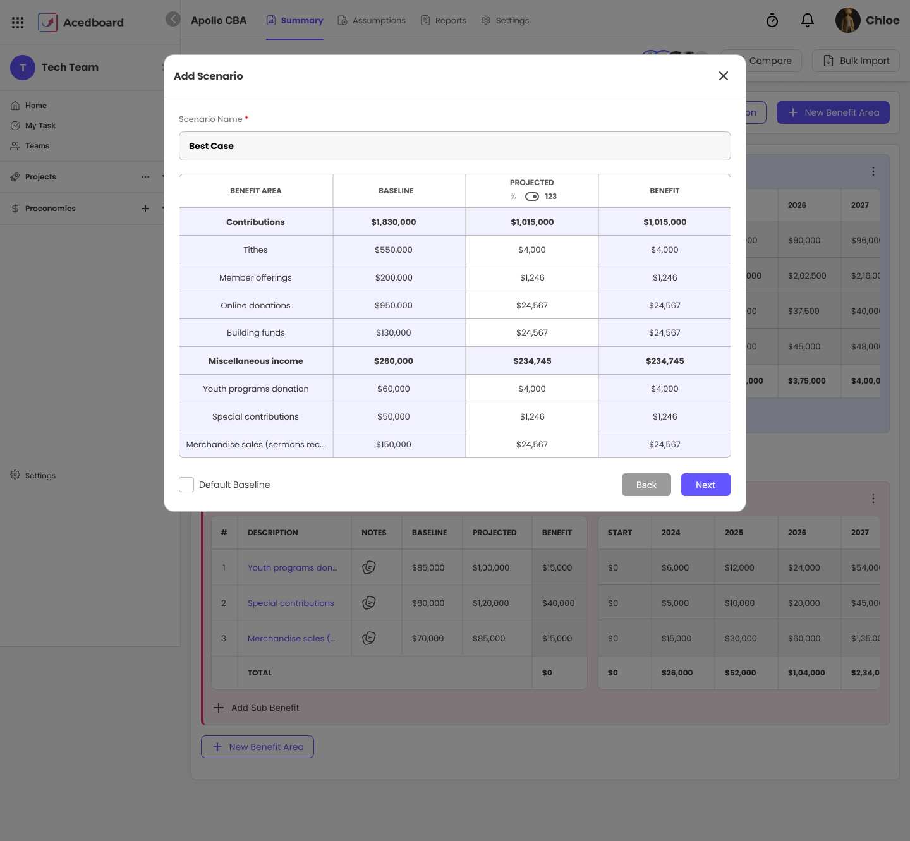
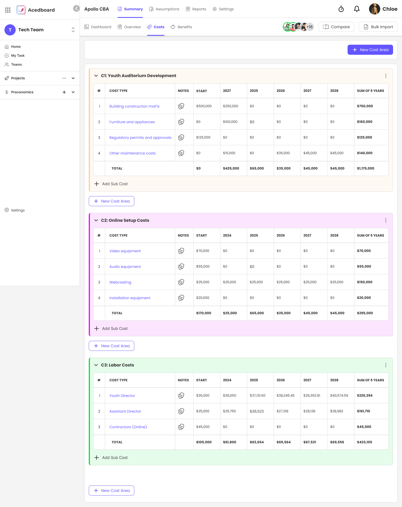

More projects
View all →Turning a project's promises into a model finance can actually trust.
A project's business case was built once in a spreadsheet to win approval, then abandoned. Numbers were hard-typed and disconnected, so when an assumption changed nobody updated the model — and promise was never compared to payoff. The financial story lived outside the tool where the work happened.
A connected model inside Acedboard. Cost and benefit drivers are defined once under Assumptions — variables, units and a calculated field — and every cell downstream references them through a real formula engine, discounted at the cost of capital into NPV, ROI and payback.
Phase 01
Defining the data model — drivers as the single source, baseline → projected → benefit as the provable unit, and how a formula engine references it all.
Phase 02
Making finance-grade mechanics — discounting, sensitivity, scenarios — usable inside a project tool's calmer patterns without dumbing the model down.
Phase 03
Agile delivery alongside engineering, edge cases and states, through to production release inside Acedboard.

The dashboard — net benefit, NPV, payback and ROI over a discounted cashflow
01 / 12
The Model
Every cost and benefit is defined once as a driver: variables with values and units, combined by a calculated field. Change "Hourly Rate" and every figure downstream recomputes — which is the difference between a living model and a spreadsheet that rots.

A driver expanded — variables → calculated field → $128,000

The formula engine — any cell references drivers and other cells
The Product

01
Proconomics sits in the Acedboard sidebar beside Projects. The empty state does one job — create your first analysis.
Empty state02
Name, start date, cost of capital, frequency and period. These aren't decoration — the cost of capital is what turns a sum of numbers into a genuine NPV and payback later.
Create · cost of capital03
Cost Drivers and Benefit Drivers under Assumptions — each a set of variables with units, plus a calculated field. The single source everything downstream references.
Assumptions · drivers04
Areas of line items across years. A raw "benefit: $200k" is an assertion; forcing a baseline and a projected value makes the benefit a visible, arguable delta.
The provable unit05
Best, worst and realization scenarios built by flexing projections against the baseline, then compared side by side with an explicit difference column.
Scenarios · compare
Summary — benefit and cost areas period by period, with undiscounted cashflow
The receipts
Scenarios

Add scenario — flex projections by % or absolute

Cost areas — the same structured model on the cost side
Outcomes
1 source
Assumptions feed the whole model — define once, reference everywhere
Live formulas
Any cell computes from drivers and other cells, and recalculates
NPV · ROI
Discounted metrics — payback and cashflow, not a flat ROI
03
Scenarios — best, worst and realization, compared in-tool
More projects
View all →